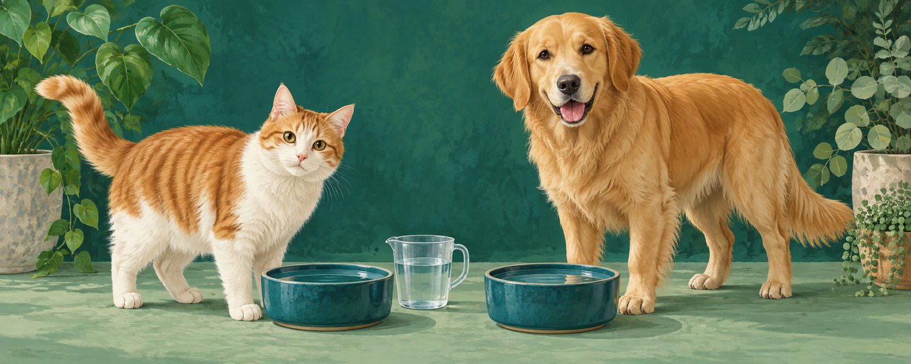

Weight-based references
Create separate cat and dog profiles. Read the source and limits beside the reference.
Sovelivee · Pet water
Keep a clear record of the water you measure for your cat or dog. Pet Water Calculator & Tracker gives you a weight-based reference and a place to save your own observations, all in your browser.

Create separate cat and dog profiles. Read the source and limits beside the reference.
Use a complete 24-hour food record. Food entries are temporary; the cat reference includes food water.
Enter the period and measured amounts. A shared bowl cannot identify one pet’s intake.
Review, filter, edit, and delete observations without turning them into automatic daily totals.
No. It is not for young, pregnant, or nursing pets or medical fluid plans. Keep fresh water available and consult your veterinarian about changes in thirst or urination.
Lleva un registro del agua que mides para tu gato o perro. Esta extensión ofrece una referencia según el peso y un lugar para guardar tus observaciones en el navegador.
Crea perfiles separados para gatos y perros. Consulta la fuente y los límites junto al resultado.
Usa un registro completo de 24 horas. Los datos son temporales; la referencia del gato incluye el agua de la comida.
Indica el período y las cantidades medidas. Un recipiente compartido no permite saber cuánto bebió una mascota.
Consulta, filtra, edita y elimina observaciones sin convertirlas en totales diarios automáticos.
No. No está destinado a animales jóvenes, gestantes o lactantes, ni a planes médicos de líquidos. Mantén agua fresca disponible y consulta al veterinario ante cambios de sed u orina.
把为猫狗测量的水量记清楚。宠物饮水计算与记录提供按体重计算的一般参考，并让你在浏览器中保存每次观察，全程无需联网。
猫狗分别建档，来源和适用限制与参考值一起呈现。
使用完整24小时食物记录。食物输入仅临时保留，猫的参考包含食物水。
记录时长和测量值。共享水碗无法确定某只宠物的摄入。
查看、筛选、编辑和删除观察，不自动拼成每日总量。
不能。不适用于幼宠、妊娠或哺乳宠物及医疗补液方案。请持续供水，口渴或排尿变化应咨询兽医。